Product understanding, 4 recorded user journeys with real outputs, a teardown of your 3 references plus 27 more viral reels, the formats they add up to, and 10 concepts across Clone, Radar and AI influencers.
Waiting on you: approve conceptsI approached it as a skincare and a supplements founder who runs their own Meta ads. Everything below I saw or did myself in your account.
Tracks ecommerce brands’ Meta ads from launch. 20 categories, sort by Longest running, signals like Long-running and Reused ideas, and filters for hook (19 types), angle, structure, proof, offer, visual style and animation technique. Each ad shows time active (“2 years, an unusually durable creative”) and how many ads reuse it.
The product says it is based on public ad activity, not spend or sales. Our ads should talk about running time, not revenue.
One button on any Radar ad: Clone for my product. Statics keep the idea and layout and swap in your product, brand kit and offer (15 credits each). Videos: the agent reads the reference (“49 s, a shot every 1.6 s”, the hook type), leaves out the source brand’s own claims, casts a presenter and rebuilds it.
Without guidance the static clone kept the look but dropped the pun. One guideline line (“keep the original text play”) fixed it.
The video agent researches how buyers talk (it searched TikTok reviews for my product), casts 3 presenters with a reason for each, offers about 20 voices, writes the script and shot plan, then films and edits with captions, B-roll and an offer tag. 15 to 60 s, 480p or 720p, 12 languages.
“Ask me at every step” turns it into a chat where you approve the presenter, voice and script. That chat is great footage.
Ads Maker statics from a link or photo (angles: showcase, lifestyle, testimonial, sale, comparison, how-to; 5 styles), auto brand kit from the store URL, ad copy in Meta’s field lengths (2 credits), “Make video” on any static, product placement, viral hooks, a social media persona agent, one product catalogue, a library.
Free: 2 generations, no card. Studio Mini $19/mo (1,500 credits). Studio $49/mo (3,000 credits, “100+ images and 10+ videos”). Studio Max $199/mo. In practice: static 15 credits; 15 s video 65 credits at 480p and 140 at 720p (the up-front estimate showed higher).
Workflow (admin only, per you). Success-story numbers (420% CTR etc.) stay off until sourced. No store-platform names in copy: “your store”.
Two fictional demo brands with real product pages, so every recording is clean and ownable: Glowday Tinted Mineral SPF 50 ($34) and Drift Magnesium Sleep Gummies ($29). Each player below is a condensed cut: waits fast-forwarded (badge top right), cursor and click ripples drawn from the logged clicks. The raw 2880x1800 masters are on your Mac.
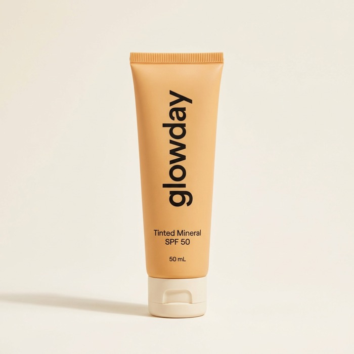
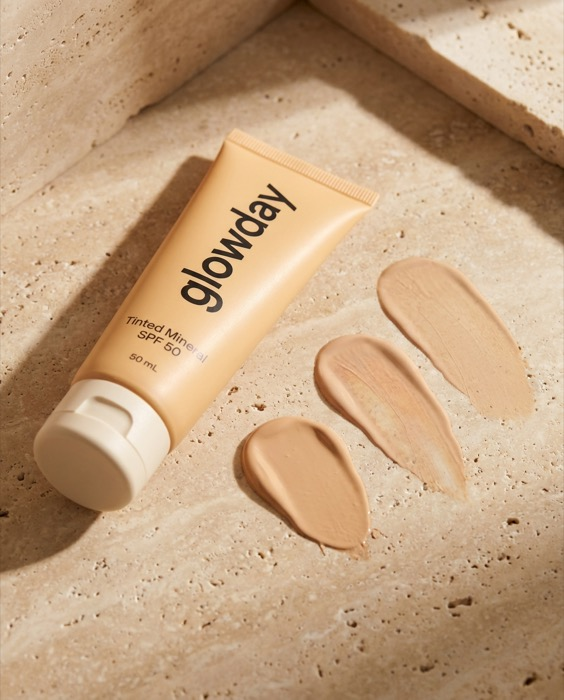
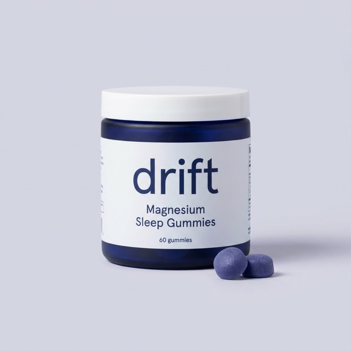
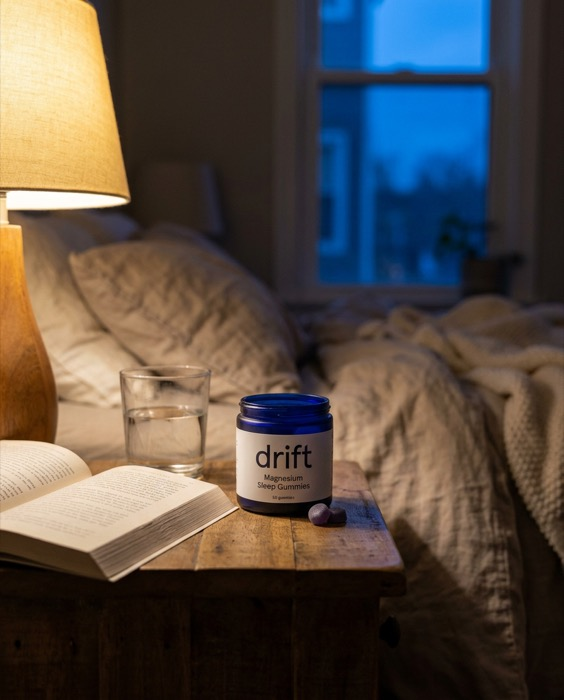
Ad moment: “one link in, five ads out”, with headlines it wrote from the reviews (“20% zinc. Zero white cast.”).
Ad moment: the 2-years chip, then the slider wipe to “White cast will never return.”
Ad moment: the casting card. Three believable creators, each with a one-line reason.
Ad moment: the agent’s own read of the reference (“a shot every 1.6 s”), then the finished clone.
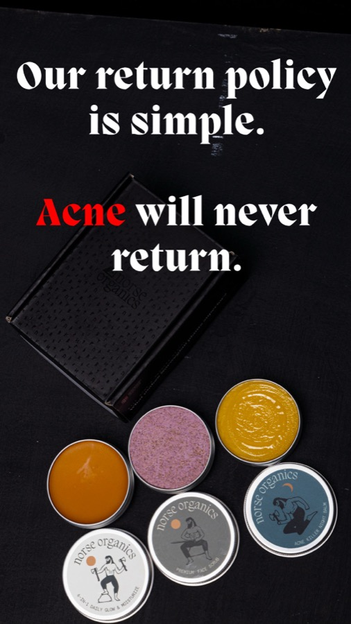
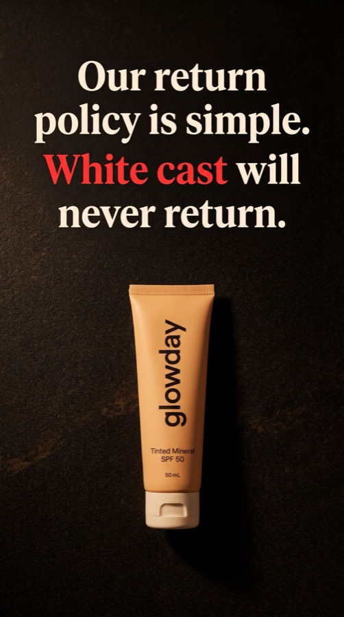
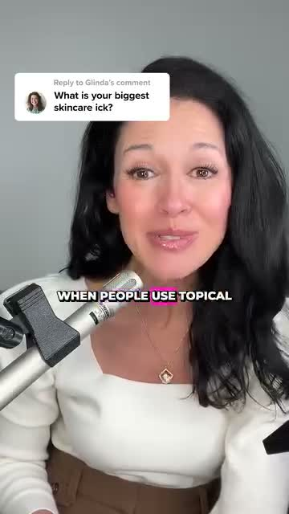
Simone blends the tint with her middle finger (frames 1 to 3 s). Her voice line says “their tinted SPF 50”: the agent removed the brand name. Arjun’s caption reads “first orders get fifteen off” (no “percent”), and the comment sticker reuses the source’s commenter name.
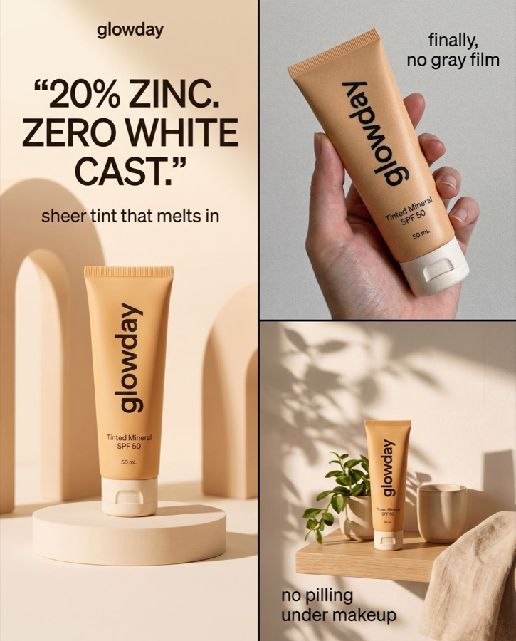
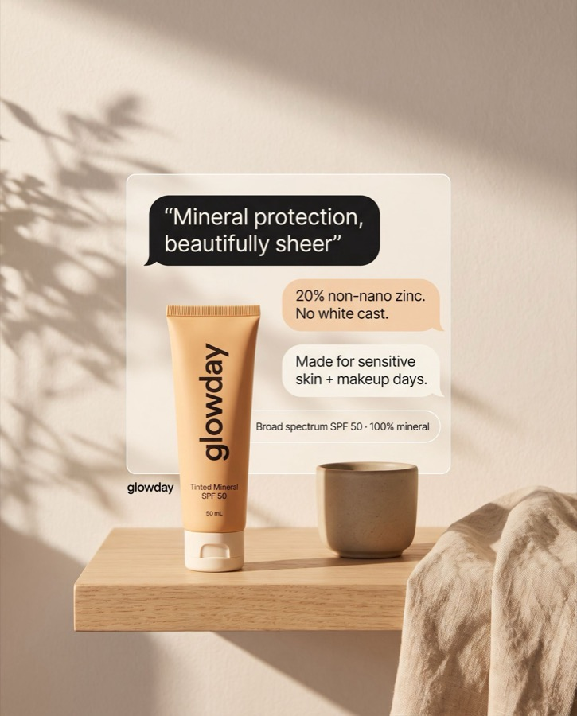
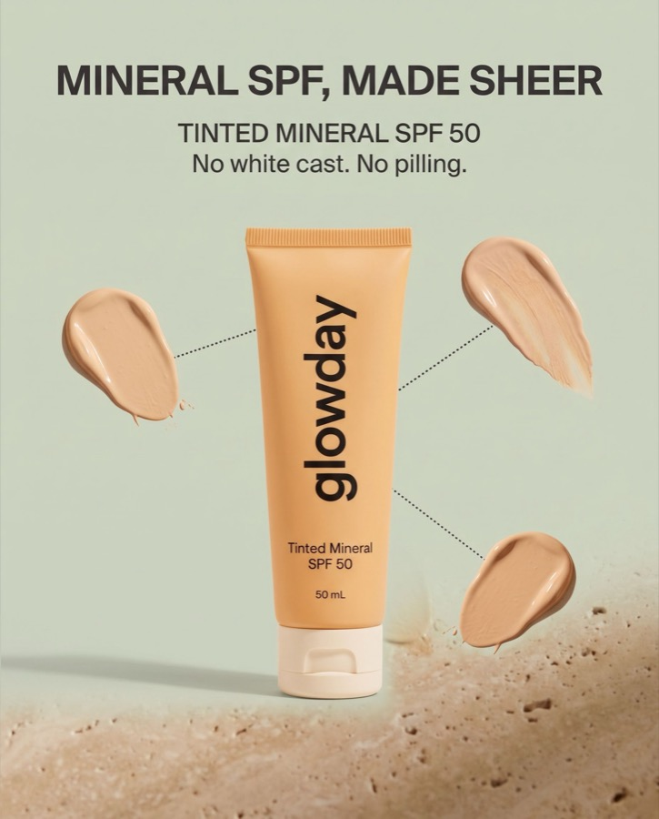
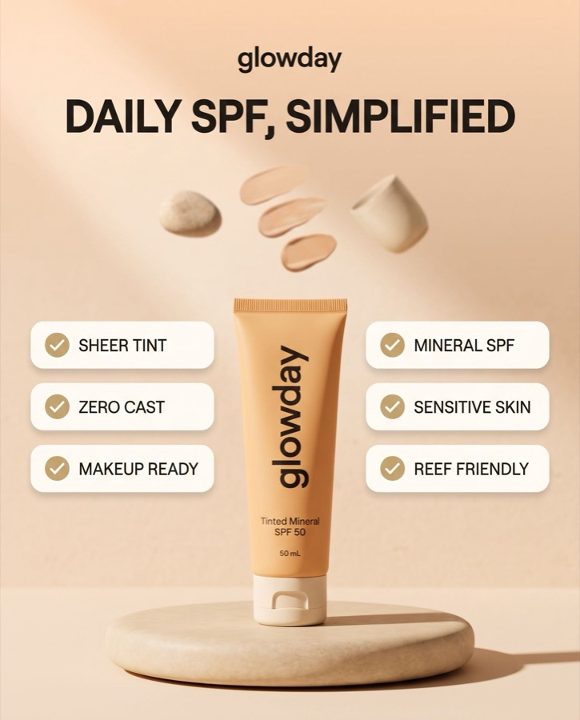
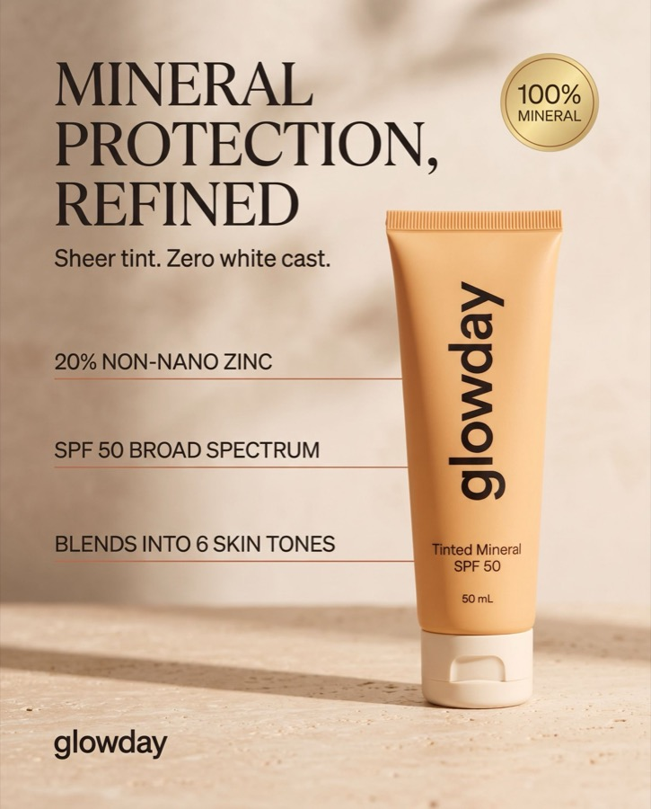
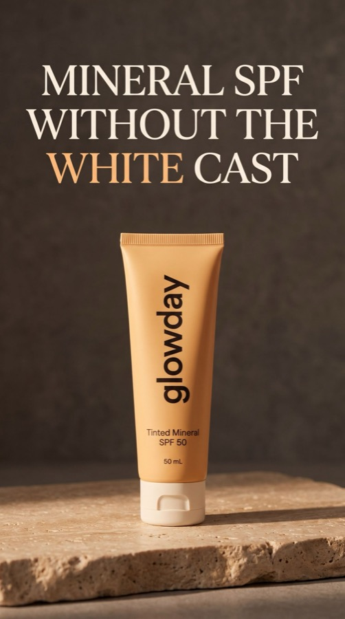
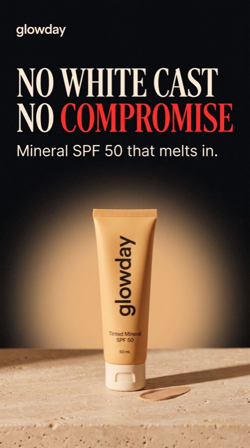
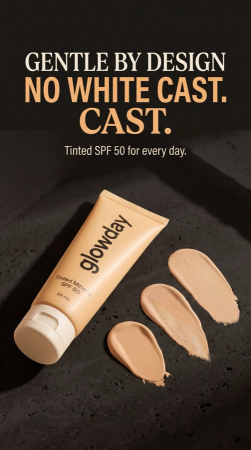
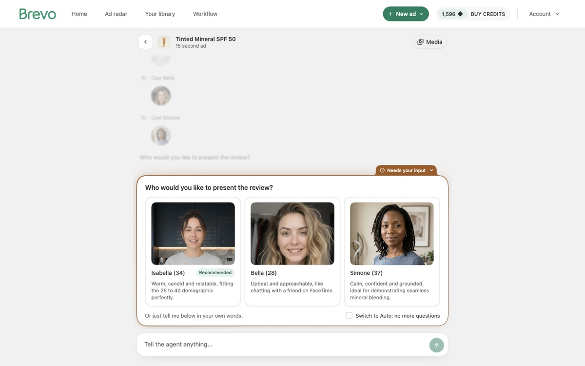
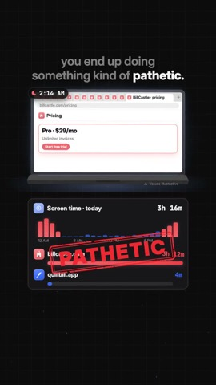
The one to steal from. 26 scenes, about 3 s each; the background flips dark/light on 18 of 25 cuts; karaoke captions where the newest word is bold and one key phrase per sentence turns into a blue pill; blue means you, red means the competitor; a goal meter (“FIRST 200 USERS”) set at 2.5 s and filled at 70 s; no real screen recordings, only clean UI replicas with mono metadata; every scene ends on a sticker or stamp.
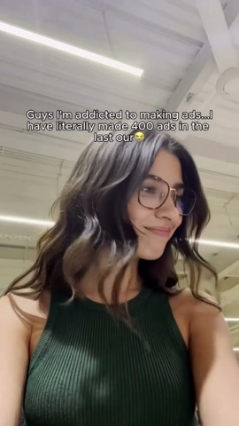
A face to camera with a specific brag, then one instruction per cut over a phone-filmed laptop, then the outputs. 7 cuts per 10 s, works with sound off. It sells Loops, a direct Ad Studio look-alike (store URL in, spy on competitors, ads out), so it is the closest thing to a competitor ad in the set.
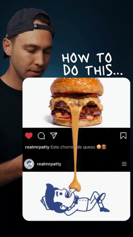
Opens on the finished, impossible-looking result plus his face and “HOW TO DO THIS…”, then the steps. About 1 in 100 viewers commented the keyword. Weak spots we fix: a 19.7 s uncut stretch and no captions while he talks.
All from 2025 or 2026, none with a paid-partnership label, each either 100k+ plays or well above the creator’s usual (most both). Families: A reaction + walkthrough, B “you’re cooked” agitation, C AI UGC reveal, D ad cloning / competitor spy, E motion-graphics explainer, F before/after.
| Creator | Family | Hook | Fits |
|---|
Contradiction + empty goal meter, 3 stamped failures, the giant competitor, “you’re looking in the wrong place”, one reframe card (“That’s not X. That’s your Y.”), a 3-step rail, the meter fills, CTA. Your getripping reel, rebuilt in Brevo colors.
The finished output in the first 3 s, a face reacting, then 3 UI steps with a punch-in on each click, then the output again so the loop restarts on proof.
A specific brag to camera, one imperative per cut over the real screen, a beat-synced montage of outputs, back to the face. Sound-off first.
A believable UGC review, then the reveal, then the casting UI and a cost comparison. Native audio, one take, every AI creator made in Ad Studio so the claim is true.
A relatable founder moment (dead ad, slow creator, budget meeting) with UI as overlays, a punchline, and the product as the release valve.
Slider wipes from long-running source to clone, running-time chip vs “cloned in 1 click”. Music only.
Each one leads with one feature and shows the product being used, problem to agitation to solution. Highlighted cards are the recommended first batch.
{{CONCEPTS}}| Concept | Feature | Length | Rel | Stop | Viral | Creat | Catch | Uniq | Total |
|---|
First batch: 03 I’m Not Real (AI influencers, highest score), 07 The $8,000 Ask (comedy, all features), 01 The 2-Year Ad (clone, built on the strongest proof I captured), 02 The Wrong Place (Radar, your favourite motion-graphics style). Cheap fast follow: 05 and 08, mostly real outputs.
A dedicated recording Chrome (only your brevo.com login copied in) captures at 2880x1800 and logs every click’s time and position, so cursors, punch-ins and zooms are placed exactly. Final passes get re-recorded in a clean demo workspace.
AI-influencer creators: generated in Ad Studio itself, so “made in Ad Studio” is true. Hosts and skit actors: cinematic-ads-harness, Seedance 2.5 with native audio, about 30 s single takes, one take each, flaws listed for you.
HyperFrames at 1080x1920 with the house style above. Budgets today: treg $109.81 (Seedance), OpenRouter about $19 (keyframes only), Ad Studio 1,416 credits. Concept 10 alone needs about 2,800 credits.